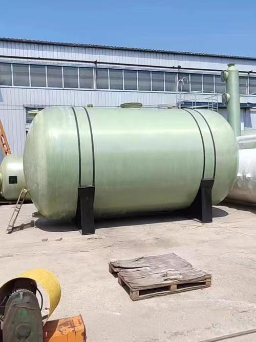
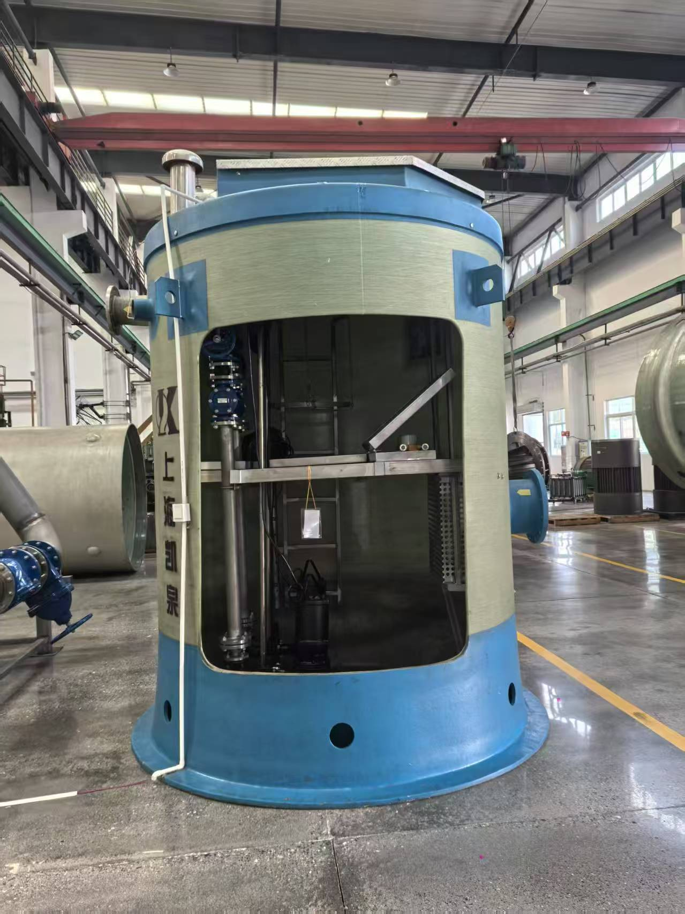
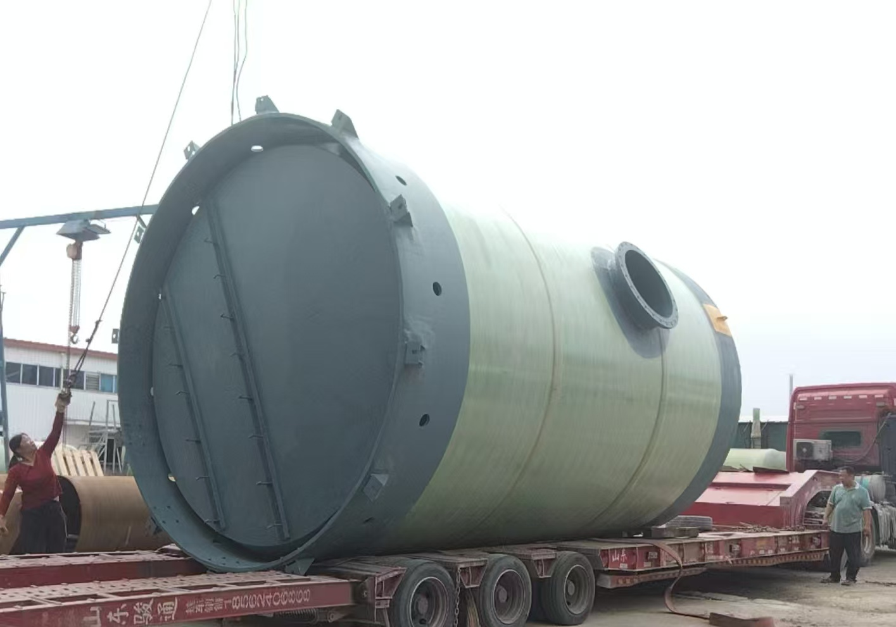

GUWEIENVIRONMENTAL
GUWEIENVIRONMENTALApplications
Project suitability depends on the medium, intended use and installation conditions. 待确认: Main applications.
FRP tanks and fittings, with structures and connections selected for the medium, volume and installation conditions.
Structure, resin system and manufacturing requirements are selected according to the medium, loads and environment.

Project suitability depends on the medium, intended use and installation conditions. 待确认: Main applications.
待确认: Supply scope, drawing coordination, installation, commissioning and after-sales services.
Review the configuration against operating conditions. Unspecified parameters remain 待确认.
待确认: Effective volume, diameter, length or height.
待确认: Resin system, medium, temperature and design loads.
待确认: Connection sizes, access openings, supports and installation method.
Specify the stored or treated medium, effective volume, operating temperature and installation method.
Check tank dimensions, access openings, inlet/outlet connections and site interfaces.
Materials, structure and inspection requirements depend on the medium, temperature and installation conditions.
Tank manufacturing, structure and fittings in one gallery. Select an image to enlarge.







Share the project type, capacity and contact details so we can discuss your technical requirements.
Online enquiries are not currently available. Please contact us by phone. +86 18026396076